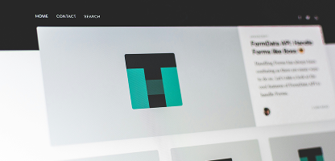

#前端開發 #職涯成長
自學前端不用怕：從零開始的三大關鍵
嗨，我是 Alyse，一名前端工程師兼職涯諮詢師。一直以來，我都很喜歡在部落格分享學習與工作心得，也常有讀者問：「我想轉職/自學前端，該從哪裡開始？」 其實自學的過程既自由又具挑戰性。我整理了三大關鍵，幫助你在短期內建立紮實基礎，並快速累積實戰經驗。希望能替你的前端之路帶來一些啟發與動力！
閱讀內文嗨，我是 Alyse 一名深耕前端技術的工程師。
擅長 React、Vue 等框架，同時熱愛為轉職與新手工程師提供職涯指導。邀請你與我一起，開啟更具潛能的程式與職涯之旅！

履歷是打開機會之門的第一步。讓我協助你突顯專業技術與核心能力，並透過簡短模擬面試為你加分，讓面試官第一眼就被你吸引。

想快速解決前端學習瓶頸，或需要專業職涯指引？透過線上一對一諮詢，我將協助你更有方向地邁進。

想打造高效能、具美感的網站？我提供從需求訪談到架構實作的一站式服務，讓你的品牌與產品在線上脫穎而出。

想讓團隊快速掌握前端最新技術或優化現有專案流程？我可協助打造專業、實用的企業內訓課程，一次解決團隊痛點。
嗨，我是 Alyse，一名前端工程師兼職涯諮詢師。一直以來，我都很喜歡在部落格分享學習與工作心得，也常有讀者問：「我想轉職/自學前端，該從哪裡開始？」 其實自學的過程既自由又具挑戰性。我整理了三大關鍵，幫助你在短期內建立紮實基礎，並快速累積實戰經驗。希望能替你的前端之路帶來一些啟發與動力！
閱讀內文面試前端工程師時，你或許擔心被問到各種刁鑽的技術題目，或是擔憂無法在短時間內展現實力。其實，許多面試官關注的重點並不僅是程式碼本身，更包含問題解決的流程與溝通能力。這篇文章將分享我在面試過程中常見的三大難題，以及如何以更具條理的方式回應，讓你在面試場合中脫穎而出。
閱讀內文
在瀏覽器畫面上實現各種精美介面，一直是前端開發充滿成就感的部分。但當面臨複雜的佈局需求或是響應式設計時，往往讓人抓破頭皮。這篇文章想跟大家分享我在實務專案中累積的三大技巧，幫助你更有效率地駕馭 CSS，打造兼具美感與功能性的網頁。
閱讀內文在職涯發展的關鍵轉折點上，適時的協助與正確的方向至關重要。藉由職涯諮詢，我可以幫助你加速釐清目標、建立更全面的技術與軟實力，並有效突破原有的舒適圈。